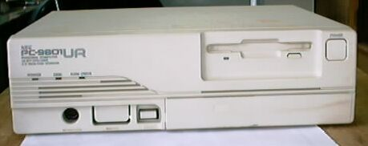
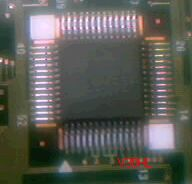
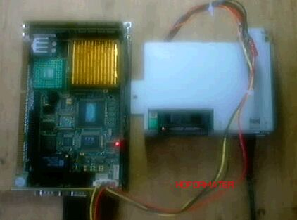
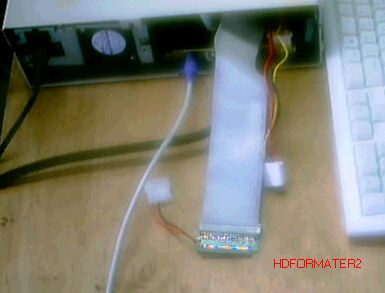
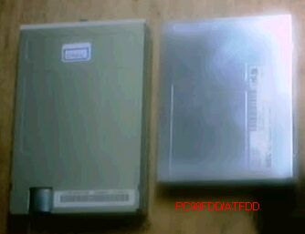
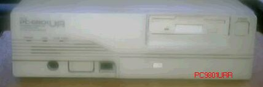

PC9801UR

PC-9801URは1991年2月発売で、1995年1月まで製造されていたようです。主な仕様は 次のようになっています。
・CPU V30HL 16MHz
・RAM 640KB
・FDD 3.5*1
・FMサウンド
・サイズ305*240*87
これも、コンパクトA4版サイズですが、UV11と違って、FDDが１台になっています。 2002年にハードオフで、500円で購入しました。動作は完全です。V30HLの16MHzと
CPUが強化されています。このV30HLはDIPパッケージではなく、QFPになっており、 マザーボードの上で、探すのが難しいほど、小さくなっています。

故障発生
動作は完全と書きましたが、その後、動作中に勝手に、リセットがかかってしまう ように、なりました。原因は判明していませんが、リセットボタンが利かなくなっており、
かなり修復の困難な故障ではないかと思います。(2002/08/18記)
HDDフォーマット専用マシンとして再利用
故障の修復は無理と判断したので、再利用の道を考えた。この小型の筐体を、捨てるのは もったいない。ちゃんとしたマシンは何台もあるので、一通りのことができるマシンではなく、
日頃不便に感じている、特定の用途に限定した物にしたい。そうなると、ハードディスク 遊びに使う、フォーマット専用マシンなんかどうだろう。仕様としては、
１．MS-DOS、PC-DOSが動作すること
２．速度は遅くても良い
３．FDDが付いていること
４．外部にHD用フラットケーブルを引き出すこと
５．外部にHD用電源ケーブルを引き出すこと
ということで、PC9801URの中身を、電源とFDDブラケットを除いて取り出す。マザーボードは、 PCA-6151を使い、CPUはクロックを、最低の75MHzまで落とす。あとは、電源のコネクタ取り替え
の、ハンダ付け作業、シャーシ加工の板金作業をするだけ。

組立前の、バラックセットでのテスト状況。

完成後の背面、IDEケーブルとHD用電源線が見える。
(2002/09/07記)


組立に当たって、いくつか問題があったが、もっとも難しかったのは、AT互換機用FDDのサイズ が、この98URFDDよりかなり大きくて（写真左AT用、右98用）、電源のケースとぶつかり、そのまま
では取り付けられないことで、電源の位置を下げて何とか収めた。98用のこの型のFDDはノート用 に使われている物と同じ、5V単一電源で、電源用のコネクタは独立していない。MACのFDDと同様、
FDDコネクタだけ差し込めばよく、配線は簡単だし、電源の逆挿しで壊してしまうなどといった、 馬鹿なことは発生しない。
フロントパネルでは、FDDに合わせて、口を広げる必要があり、ヤスリで丹念に削ればよい。 できあがったところを、オリジナルの正面と比較しても、このピンぼけ写真では変化がわからない
と思う。
(2002/09/12追記)
PC9801のページに戻る